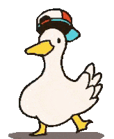

Go back to my cool website
Go back to my cool website
the tab content

A list of pages I've made (excluding the hidden ones)
- Sententia's website
- Frontpage
- Help
- -> Frontpage
- Blog
- Cipher
- Þ (thorn letter)
- 42
- Abysmal
- Archive
- Old index
Go back to my cool website
the tab content

A list of pages I've made (excluding the hidden ones)
Send 1000 BTC to unlock them.
A fatal exception 0E has occurred at 0028:C0011E36 in VXD VMM(01) + 00010E36. The current application will be terminated.
* Press any key to terminate the current application.
* Press CTRL+ALT+DEL again to restart your computer. You will lose any unsaved information in all applications.
Press any key to continue _